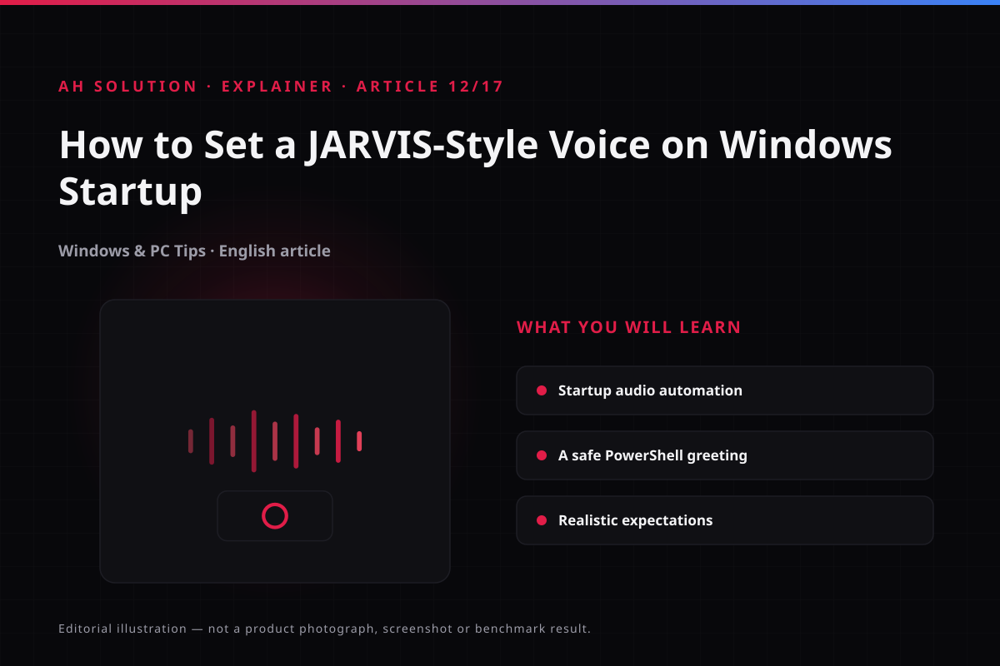

Hearing a JARVIS-like assistant in a film makes you wish your PC greeted you the same way. The original AH Solution video, published in September 2020, is built on that idea: setting a custom welcome voice when Windows starts, a small personalisation project that makes a PC feel like yours.
One clarification comes first. Playing an audio greeting at startup is not JARVIS: it is a recorded or synthesised greeting that plays at logon, with no assistant behind it and no ability to hold a conversation. Everything that follows uses standard mechanisms - the Startup folder, Task Scheduler and the speech synthesis built into Windows, driven from PowerShell. No registry hacks, no administrator-level tricks - only user-level setup.
Original video: Make Your Computer Welcome You Like JARVIS! 🤖 | Windows Startup Voice Video published: 09 September 2020 · Duration: 02:17
Greeting versus AI assistant
Set expectations first. JARVIS in the films is an intelligent assistant that talks, understands commands and answers in context. A Windows startup voice is only a pre-recorded audio file or a text-to-speech sentence.

- Will it use your name? Yes, if you recorded your name into the greeting.
- Will it understand your commands? No.
- Will it fetch information from the internet or run tasks? No.
Does that make the project worthless? Not at all. A personal greeting is surprisingly satisfying the first time the desktop opens, and it is a beginner-friendly automation project built on standard Windows features - not "building an AI".
Method 1: a greeting from the Startup folder
This is the simplest and most common approach. With a greeting audio file (mp3/wav), it can play automatically at logon.
- Prepare the audio file: record your own greeting, or use an audio file that you have the rights to. A movie clip or copyrighted dialogue used without permission is a bad idea; your own voice is safest.
- Open the Startup folder: press
Win + R, typeshell:startupand press Enter. Whatever is placed there runs automatically after you log on. Microsoft's startup apps page explains the folder and startup items. - Create a player shortcut: right-click the audio file > Send to > Desktop (create shortcut), then move it into the Startup folder.
- Set the properties: right-click the shortcut > Properties > Start in (or the "Run" option) and set it to minimised, so the player opens in the background.
- Restart and test: log out and back in - the greeting should play.
Limitation: the player window can appear on screen from time to time. If that is acceptable, leave it; otherwise use a lightweight player.
Method 2: Windows' own voice through PowerShell
If you have no audio file, use the SAPI speech synthesizer that ships with Windows, so there is nothing to download. A short PowerShell command speaks any text:
Add-Type -AssemblyName System.Speech
$synth = New-Object System.Speech.Synthesis.SpeechSynthesizer
$synth.Speak("Good morning. Welcome back to your computer.")Open PowerShell, paste these lines and test it. The voice, speed (Rate) and volume (Volume) properties are documented in the .NET SpeechSynthesizer docs.
To run it at startup: save the command as a .ps1 file and run it from the Startup folder through a .bat or .lnk, or trigger it from Task Scheduler below.
Honest note: the built-in SAPI voice sounds robotic, not a premium "JARVIS-like" voice. A natural text-to-speech engine you have the rights to use, or a well-recorded file, sounds better.
Method 3: Task Scheduler, the robust approach
The Startup folder works, but Task Scheduler gives more control: delays, event-based triggers and conditions such as running only on AC power. Microsoft's Task Scheduler documentation covers deeper configuration.
- Open Task Scheduler with
taskschd.msc. - Create a Basic Task and name it "Welcome Voice".
- Trigger: When I log on (At log on).
- Action: Start a program - the
.ps1file, or a media player plus the path to the audio file. - In the Conditions tab, check that no unwanted condition (such as start only on AC power) is on.
- Finish, then test with a log out and log in.
Dialog names vary between Windows versions, but the flow is the same. For command line arguments, put the player path in "Program/script" and the file in "Add arguments".
The video's context and advice for today
The video is from 2020, when the startup folder plus media player method was the norm. The core mechanism has not changed, but a few things have:
- Settings interface: dialogs may look slightly different in Windows 11.
- Security awareness: startup items are taken more seriously now; review yours regularly.
- Better text-to-speech options: free engines and AI voices are available now, but use them only when the licence allows it.
Customisation ideas
To make the greeting more personal:
- Dynamic content: a PowerShell script can insert the current date and time.
- Volume control: set the playback volume in the script - low in the morning, or the greeting startles you.
- Conditions: a greeting only on weekdays, or only for a specific user.
- Easy to disable: remove the shortcut from the Startup folder and it stops.
Troubleshooting and limitations
- The greeting plays but the player is visible: try "Minimized" in the shortcut's "Run" property, or use a console-based player.
- The PowerShell script does not run: the execution policy may be blocking it. Use a
.batwrapper that calls the PowerShell command instead of the.ps1file. Understand the script - do not paste it blindly. - It plays sometimes and not others: check the Task Scheduler conditions (power, idle). A Startup folder shortcut path may also have changed.
- More than one sound: Windows has its own startup sound, so both can play together.
Safety and privacy
- Run only scripts you understand: that is the golden rule. Do not run random internet scripts with administrator rights.
- Keep it at user level: the Startup folder and a Task Scheduler "When I log on" task are user-level. Registry hacks (Run keys) are unnecessary; avoid them.
- Avoid copyrighted audio: movie dialogue - including JARVIS's own voice - may be protected by copyright. Your own recording is the better option.
- Personal details in the greeting: if it contains your name or other details and the PC is shared, think about that first.
Frequently asked questions
Do I need administrator rights for a startup voice?
No. The Startup folder and Task Scheduler (for your own user) work at user level; no administrator access is needed.
Why does the PowerShell voice sound robotic?
Windows' built-in SAPI synthesiser is basic. Recorded audio or a better text-to-speech engine sounds more natural.
Does this work on Windows 11 as well?
Yes. The Startup folder and Task Scheduler are both in Windows 11. Only the dialog names differ slightly.
Is a voice at startup a Windows feature?
No, the Windows startup sound is separate. Your custom greeting is set up by you, and both can play together.
How do I remove the script?
Delete the shortcut or the .ps1 file from the Startup folder, or delete the task from Task Scheduler. Removal is clean.
Final recommendations
If you are trying this for the first time, Method 1 - the Startup folder with your own recorded audio - is the simplest and most satisfying. To learn something technical, try the PowerShell and SAPI method.
Use Task Scheduler when you need more control. And keep the framing in mind: this is a fun personalisation project, not an AI assistant replacement. A good greeting, a smooth setup and clean safety habits are enough.
For more Windows customisation ideas, see our tutorials.html and blog.html pages.
Resources and official links
- Microsoft - configuring startup applications - the official explanation of the
shell:startupfolder. - Microsoft Learn - Task Scheduler documentation - the reference for triggers, conditions and actions.
- Microsoft Learn - SpeechSynthesizer (System.Speech.Synthesis) - official docs for the text-to-speech API behind the PowerShell command.